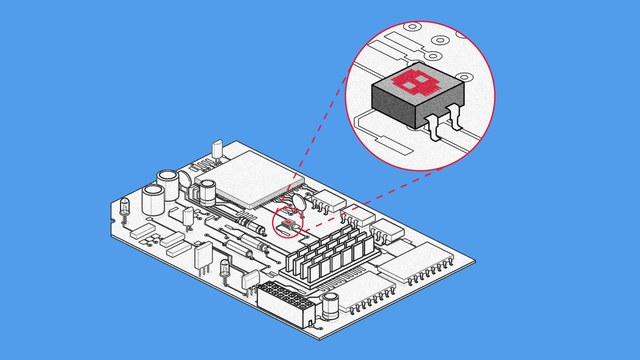
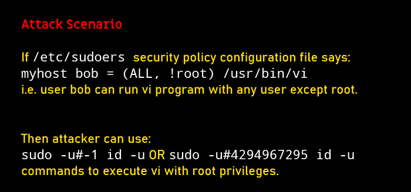

前一篇博文《时间与人生》看来还挺受欢迎，访问量和评论数都比较多。很多老读者来捧场，俺也回复了好几轮读者评论。上个周日一直回复到凌晨1点，但还是无法顾及每一个留言的读者。在此表示抱歉 :(
编程随想注：
上一篇博文的评论区，好多读者在问此事，所以把这个放到本文开头部分。
大部分网友对该法律产生【误读】，以为朝廷方面想通过这部法律来“收集用户密码（password）”。
实际情况是——在颁布该法律之前，“有关部门”就已经能轻易拿到用户在【国内】网站的帐号密码。
举个例子：
假设你使用某款【国产】的 IM（聊天工具）。有一天，你被警方认定为犯罪嫌疑人。那么，警方就可以找到运营该 IM 的公司，拿到你的帐号密码。（必要的时候）警方人员甚至可以用你的密码登录你的帐号，然后冒充你的身份与你的联系人进行聊天......还美其名曰“办案需要”。
某些天真的读者会想：“我又没干坏事儿，警方不会把我当成犯罪嫌疑人。”
有上述想法的读者，不妨回想一下前不久的【华为李元洪案】。
在天朝这个奇葩的国度，会发生很多奇葩的事情。生活在天朝，切莫太天真！
至于那些从事敏感活动的网民（比如类似俺这种），尤其【不要】使用【国产】的网络服务进行敏感活动。
（上述观点，俺已经唠叨了很多年）
《我的密码国做主? 中国新法元旦上路 @ 德国之声》
（编程随想注：以下是此文的摘录，粗体是俺标注滴）
《China's Study the Great Nation app 'enables spying via back door' @ BBC/英国广播公司》
《“学习强国”软件暗藏后门，可进行大规模监控 @ RFI/法广》
《中国疑透过「学习强国」监控用户，忌同一手机上存敏感资讯 @ RFA/自由亚洲电台》
编程随想注：
“这个 pdf”是德国安全研究人员对“学习强国 app”的分析报告。
《美两党议员力推＜面部识别技术授权法案＞，限制联邦机构滥用 @ cnBeta》
《美国伯克利投票禁止面部识别 @ Solidot》
《中国手机入网，强制实施人脸识别，引发用户忧虑 @ BBC/英国广播公司》
《调查显示：中国用户高度担忧面部识别 @ FT/金融时报》
《Tiktok 利用设备指纹跟踪用户 @ Solidot》
《字节跳动在美国被控收集儿童数据 @ Solidot》
《美国当局对抖音海外版 TikTok 展开国家安全调查 @ 路透社》
《美国参议员呼吁：追溯调查字节跳动收购交易 @ FT/金融时报》
《五角大楼发警告，美军多军种禁用 TikTok @ 纽约时报》
《中国加密货币计划的强大盟友——“老大哥” @ 纽约时报》
编程随想注：
俺一直习惯于【现金】消费，既不喜欢“刷卡”，也不喜欢“刷手机”。因为【现金具备匿名性】。
请注意：“消费记录”包含的信息量非常大——它不光可以反映出你的财务状况，还可以精确地描绘出你的生活规律、活动轨迹、个人喜好......
如今的【电子支付】，由腾讯与阿里巴巴两大 IT 巨头掌控。虽然朝廷可以从两巨头那里得到屁民的消费数据，但终归是【间接获取】，不太爽；看如今朝廷这架势，大概想要亲自上阵了。
编程随想注：
如今【智能】的电子设备越来越多（比如：智能电视、智能音箱...），它们具备如下两个特点：
特点1：丰富的外设——【智能】设备为了实现更好的“人机互动”，通常都有相关的外设（比如：摄像头、麦克风）。
特点2：密切的互动——大部分智能设备与你有比较密切的互动。
（基于上述这2条）在提供“便捷性”的同时，它们也成了潜在的【隐私收集工具】。由于大多数智能设备都能【联网】，它们当然可以把你的隐私数据汇总到背后的商业公司。
《研究显示智能电视是数据收集机器 @ Solidot》
《Now even the FBI is warning about your smart TV's security @ TechCrunch》
（下面这篇是上述 TechCrunch 文章的中文简介）
《FBI 对智能电视的安全性发出警告 @ Solidot》
《国内云服务厂商可能会监控你的程序行为 @ Solidot》
《涉嫌为沙特充当间谍，推特员工受控 @ 德国之声》
编程随想注：
既然 Twitter 的雇员会被沙特政府收买，那么，他们是否也会被中共收买？推而广之，其它欧美公司的雇员，会不会被朝廷收买？
因此，对于真正高危的人士，【不要】把你的【身份信息】暴露给任何一家“商业公司”或“非盈利组织”。因为你【无法确保】该机构的雇员都是靠谱滴。
更进一步，即使某个机构里面的每个雇员都很靠谱，还存在【服务器被入侵】的风险。
《New Linux Vulnerability Lets Attackers Hijack VPN Connections @ Slashdot》
《New Linux Vulnerability Lets Attackers Hijack VPN Connections @ Bleeping Computer》
编程随想注：
上述漏洞编号：
该漏洞的高危人群——经常使用【公共 wifi 热点】的网民。“公共 wifi 热点”的危险性，俺已经在博文中聊过。【至少】包括两点：
1、架设该热点的人，可能是攻击者
2、与你一起使用该热点的人，可能是攻击者
该攻击本质上是（某种形式的）【地址欺骗】。如果 TCP/IP 协议栈开启了【reverse path filtering】，有助于降低某些【地址欺骗】的风险。
对于 Linux 用户，可以在 sysctl 的配置中添加如下配置项：
除了“避免使用公共热点”个教训，该新闻还有另一个教育意义——再次体现出【多重加密代理】的优势。
俺一直在强调【基于 Tor 的多重代理】。那些喜欢用 VPN 的同学，就可以组合 VPN 与 Tor（Tor over VPN）。这么干的好处在于【双保险】。即使其中一个协议出现安全漏洞（被攻破），你还有【另一重保护】。
《Windows 'BlueKeep' Attack That U.S. Government Warned About Is Happening Right Now @ Forbes/福布斯》
《Over Half of Fortune 500 Exposed To Remote Access Hacking @ Slashdot》
《BlueKeep 漏洞正被利用 @ Solidot》
《Android 0day 漏洞 Bad Binder @ Solidot》
《Android 0day 漏洞影响 Google、小米和华为等品牌手机 @ Solidot》
《Android NFC 漏洞可被黑客拿来传播植入恶意软件 @ cnBeta》
《Android 漏洞 StrandHogg 正被利用 @ Solidot》
《“Checkm8”漏洞确认可被用来越狱运行 iOS 13.1.1 的 iPhone X @ cnBeta》
编程随想注：
该漏洞被称作“iPhone 史诗级硬件漏洞”；但从实际效果看，应该是被媒体夸大了。
利用该漏洞进行越狱，一旦手机重启之后就【失效】了。对普通用户，其影响有限；但警方使用的【手机取证件】，或许会利用该漏洞。
《Realtek Wi-Fi 芯片驱动漏洞能触发内核的缓冲溢出 @ Solidot》
请注意：这是一个很【老】的漏洞（源自内核的 3.10.x 版本）；再加上 Realtek 网卡很常见，该漏洞的打击面很大。
最近的几期《近期安全动态和点评》，俺一直在唠叨“wifi 的安全风险”。由于无线通讯本身的复杂性，从“协议设计”到“网卡驱动”，很多地方会成为潜在的攻击点。
《Google Discloses Chrome Zero-Day Exploited in the Wild @ Slashdot》
编程随想注：
上述漏洞编号
该案例的教训是——其一，浏览器环境的隔离；其二，浏览器的定制（功能裁剪）。
俺长期唠叨的一个“上网招数”是：要把“重要帐号”限制在某个【专用】的浏览器环境里。也就是说——该帐号只在这个受限环境中使用；同时，该环境也只用于这个帐号。
由于该“受限环境”很重要，你要定制浏览器，把【不】需要的功能全都【禁掉】——以此来【降低攻击面】，提升该“浏览器环境”的安全性，从而保护该“重要帐号”。
关于“浏览器隔离”的讨论，参见《如何防止黑客入侵》系列的其中一篇。关于“浏览器定制”的教程，参见《扫盲 Firefox 定制——从“user.js”到“omni.ja”》。
《安全研究员披露 Chrome 的 Magellan 2.0 漏洞 @ Solidot》
《Linux 曝出 Sudo 提权漏洞 受限用户亦可运行 root 命令 @ cnBeta》
《DNS-over-HTTPS Will Eventually Roll Out in All Major Browsers, Despite ISP Opposition @ Slashdot》
编程随想注：
到2019年4季度，几大主流的浏览器都已经支持 DoH 方式。
微软也宣布：将在未来的 Windows 10 版本中增加对 DoH 协议的支持
注：
传统的 DNS，全程都是【明文】传输，既无法做到“保密性”，也无法做到“完整性”。而 DoH 协议可以同时确保这两点。
引申阅读：
《扫盲 DNS 原理，兼谈“域名劫持”和“域名欺骗／域名污染”》
《对比4种强化域名安全的协议——DNSSEC，DNSCrypt，DNS over TLS，DNS over HTTPS》
《HTTPS 加密流量超过九成 @ Solidot》
《Chrome Promises: 'No More Mixed Messages About HTTPS' @ Slashdot》
编程随想注：
从 Chrome 80 开始，将不再支持【混合内容】。
【混合内容】指“加密的 HTTPS 页面”中包含“以 HTTP 明文加载的元素”。【混合内容】会增加“网络嗅探”的风险，也会增加“恶意代码植入”的风险。
《Facebook, Mozilla, and Cloudflare Announce New TLS Delegated Credentials Standard @ Slashdot》
《Delegated Credentials for TLS @ Cloudflare》
编程随想注：
这个玩意儿主要针对“系统管理员”，与普通用户关系不大。
《美国军方关键系统运行 Linux @ Solidot》
在桌面系统中，Linux 相比“Windows ＆ macOS”的安全优势还是很明显滴！具体的分析，参见俺前几年的博文：
《为什么桌面系统装 Linux 可以做到更好的安全性（相比 Windows ＆ macOS 而言）》
编程随想注：
在发布本文的前一天，俺已经把 Tor Browser 9.0.x 版本上传到【BTsync 网盘】。
该网盘汇总了一些常见的翻墙工具，同步密钥如下：
引申阅读：
《关于 Tor 的常见问题解答》
《“如何翻墙”系列：扫盲 Tor Browser 7.5——关于 meek 插件的配置、优化、原理》
《Tails 4.0 发布 @ Solidot》
下面这篇写于6年前（2013年12月），有点老。
如果关注 Tails 的读者比较多，俺可以考虑——针对新发布的4.0版本（或未来的更高版本）再写一篇教程。
《扫盲 Tails——专门强化隐匿性的 Linux 发行版》
《Synchronous Messaging at Mozilla: The Decision @ Mozilla 官网》
《Welcoming Mozilla to Matrix! @ Matrix 官网》
编程随想注：
在《近期安全动态和点评（2019年2季度）》一文中已经介绍过 Matrix 这个新兴的协议。
《WireGuard VPN Is On Its Way To Linux @ Slashdot》
《WireGuard 将合并到 Linux 5.6 @ Solidot》
《北京网络行业协会组织讨论 VPN 相关问题 @ Solidot》
为啥天朝要把“使用 VPN”上纲上线到【刑法】的高度捏？
关键在于——朝廷一直都【不】承认 GFW 的存在（不信的话，可以去围观“外交部发炎人最近几年的各种忽悠”）
既然不承认 GFW，就没办法用“翻墙”这个罪名，于是只好在 VPN 上做文章。
《伊朗上调油价引发民众抗议，当局实施镇压切断互联网 @ BBC/英国广播公司》
《伊朗当局的断网行动可能会成为常态 @ RFI/法广》
《伊拉克示威加剧，政府断网 @ 联合早报》
《继印度之后，俄罗斯成功断开全球互联网 @ 新西兰信报》
《断网成为全球流行病 @ 德国之声》
编程随想注：
“网络大炮”这招已经是【老】招数啦——
早在2015年，GFW 就用这招来对付 Github。当年俺还专门发了一篇《每周转载：关于 GitHub 和 GFW 的 PK（第2季）》
到了2017年，使用这招对付《明镜新闻网》（相关技术分析参见 StackOverflow 网站的“这个链接”）
2019年，香港爆发大规模政治抗议之后，抗议者使用【连登论坛】作为网络交流平台，该网站自然就成了朝廷的眼中钉。于是 GFW 故计重演。
12月初，AT＆T 的安全研究人员发了一篇博文，专门分析了此次攻击的技术细节，文章如下：
《The “Great Cannon” has been deployed again @ AT＆T Labs》
《Intel's Cascade Lake CPUs Impacted By New Zombieload v2 Attack @ Slashdot》
《英特尔芯片被爆出现新漏洞 ZombieLoad，苹果，微软，谷歌都跑不了 @ 搜狐》
《为防止 Zombieload v2 攻击，Windows 和 Linux 引入选项关闭英特尔 TSX @ cnBeta》
《Top Linux developer on Intel chip security problems: 'They're not going away.' @ ZDNet》
（下面这篇是上述 ZDnet 文章的中文简介）
《英特尔芯片安全问题将会存在很长时间 @ Solidot》
类似的观点，俺在《近期安全动态和点评（2019年1季度）》中也提到过，当时的原话如下：
上述这些 CPU 硬件的安全漏洞，本质上都源自【预测执行机制】（speculative execution）。最近20年，Intel ＆ AMD 为了在“性能竞赛”上压倒对方，在【预测执行机制】上做了很多文章。性能是提升了，但祸根也埋下了。
在这方面，Intel 芯片的问题比 AMD 严重得多。
《Planting Tiny Spy Chips in Hardware Can Cost as Little as $200 @ Wired/连线》

（下面这篇是上述 Wired 文章的中文简介）
《在硬件上植入微型间谍芯片只需200美元 @ Solidot》
《我们能构建可信赖的硬件吗 @ Solidot》
《With a Laser, Researchers Say They Can Hack Alexa, Google Home or Siri @ 纽约时报》
《谷歌 Pixel 4面部解锁存重大漏洞——闭眼也能解锁 @ 网易科技》
《New 'Unremovable' XHelper Malware Has Infected 45,000 Android Devices @ Slashdot》
《难以移除的恶意程序 xHelper @ Solidot》
《NSO 被指入侵 WhatsApp，监视美国盟国的高官 @ Solidot》
《微软的 Rust 实验进展良好 @ Solidot》
俺博客上，和本文相关的帖子（需翻墙）：
《为啥朝廷总抓不到俺——十年反党活动的安全经验汇总》
《如何保护隐私》（系列）
《如何防止黑客入侵》（系列）
《如何隐藏你的踪迹，避免跨省追捕》（系列）
《为什么桌面系统装 Linux 可以做到更好的安全性（相比 Windows ＆ macOS 而言）》
《扫盲 DNS 原理，兼谈“域名劫持”和“域名欺骗／域名污染”》
《对比4种强化域名安全的协议——DNSSEC，DNSCrypt，DNS over TLS，DNS over HTTPS》
《关于 Tor 的常见问题解答》
《“如何翻墙”系列：扫盲 Tor Browser 7.5——关于 meek 插件的配置、优化、原理》
《扫盲 Firefox 定制——从“user.js”到“omni.ja”》
《每周转载：关于 GitHub 和 GFW 的 PK（第2季）》
★隐私保护
◇2020年实施的《密码法》
编程随想注：
上一篇博文的评论区，好多读者在问此事，所以把这个放到本文开头部分。
大部分网友对该法律产生【误读】，以为朝廷方面想通过这部法律来“收集用户密码（password）”。
实际情况是——在颁布该法律之前，“有关部门”就已经能轻易拿到用户在【国内】网站的帐号密码。
举个例子：
假设你使用某款【国产】的 IM（聊天工具）。有一天，你被警方认定为犯罪嫌疑人。那么，警方就可以找到运营该 IM 的公司，拿到你的帐号密码。（必要的时候）警方人员甚至可以用你的密码登录你的帐号，然后冒充你的身份与你的联系人进行聊天......还美其名曰“办案需要”。
某些天真的读者会想：“我又没干坏事儿，警方不会把我当成犯罪嫌疑人。”
有上述想法的读者，不妨回想一下前不久的【华为李元洪案】。
在天朝这个奇葩的国度，会发生很多奇葩的事情。生活在天朝，切莫太天真！
至于那些从事敏感活动的网民（比如类似俺这种），尤其【不要】使用【国产】的网络服务进行敏感活动。
（上述观点，俺已经唠叨了很多年）
《我的密码国做主? 中国新法元旦上路 @ 德国之声》
（编程随想注：以下是此文的摘录，粗体是俺标注滴）
此「密码」非彼「密码」
根据《人民网》，密码法中的密码，是指采用特定变换的方法对信息等进行加密保护、安全认证的技术、产品和服务。主要功能是为了加密保护和安全认证。这与日常生活一般人用在电子邮件、社交媒体、手机上使用的「密码」不同。
对此台港科技媒体「科技新报」、「Unwire」都提到，这个法案主要是为了管理区块链，透过规范与整合加密技术，因应未来加密货币推广，和相关密码技术不会对国家安全造成影响。
报导中也提到，事实上，中国政府若要取得人民的资料，不需要《密码法》，直接引用2016年制定的《中华人民共和国网路安全法》，不需要密码就可以拿到。
◇【学习强国 app】的隐私问题
《China's Study the Great Nation app 'enables spying via back door' @ BBC/英国广播公司》
《“学习强国”软件暗藏后门，可进行大规模监控 @ RFI/法广》
《中国疑透过「学习强国」监控用户，忌同一手机上存敏感资讯 @ RFA/自由亚洲电台》
编程随想注：
“这个 pdf”是德国安全研究人员对“学习强国 app”的分析报告。
◇【面部识别】的隐私问题
《美两党议员力推＜面部识别技术授权法案＞，限制联邦机构滥用 @ cnBeta》
《美国伯克利投票禁止面部识别 @ Solidot》
伯克利成为加州第三个美国第四个禁止政府使用面部识别技术的城市。在得到广泛支持之后，市议会投票一致通过了议员 Kate Harrison 今年初提出的法规。
麻省的 Somerville 是美国东海岸第一个禁止政府使用面部识别的城市，西海岸的湾区有三座城市，旧金山和奥克兰以及现在的伯克利。
新的法规还遵守了加州的一项州法律——A.B.215，从2020年1月1日起，警察暂停三年在佩戴的摄像头上采用面部识别技术。
《中国手机入网，强制实施人脸识别，引发用户忧虑 @ BBC/英国广播公司》
《调查显示：中国用户高度担忧面部识别 @ FT/金融时报》
大型民意调查显示，大部分人希望选择传统的识别方法，而不是面部识别技术。这反映出世界第二大经济体对个人数据保护的担忧日益加剧。
中国已率先在全球推广面部识别，并在交通枢纽、学校、购物中心和居民区安装面部扫描器。
不过，根据北京的南都个人信息保护研究中心（Nandu Personal Data Protection Research Centre）周四公布的结果，虽然 60% 至 70% 的人认为科技让生活更安全、这些设置让生活更便捷，但用户担心自己的个人信息泄露，而且希望更多地掌控自己的数据。
这项调查突显出，中国面部识别的普及已产生广泛的担忧甚至抵触。该调查发现，74% 的受访者希望选择传统的识别方式，而非面部识别。
......
◇【抖音 ＆ TikTok】的隐私问题
《Tiktok 利用设备指纹跟踪用户 @ Solidot》
对 Tiktok 应用和网站流量的分析发现，它会将用户数据发送给 Appsflyer 和 Facebook，会利用设备指纹跟踪用户。Tiktok 短地址被发现包含了安装 ID，可用于识别谁分享了视频。
它甚至还能跟踪谁观看了视频。它使用的跟踪技术包括了 Canvas Fingerprinting，在后台使用矢量图形命令绘制图形，保存图像到一个栅格化 PNG 文件，根据硬件和浏览器该数据在不同设备之间具有唯一性；它还使用音频指纹识别观看者，内部生成音频然后记录比特流，这一数据在设备之间也具有唯一可识别性。北京字节跳动称指纹被用于识别恶意浏览器行为，但研究者对此表示质疑。
《字节跳动在美国被控收集儿童数据 @ Solidot》
TikTok 母公司北京字节跳动在美国被控违反了儿童隐私保护法。字节跳动在2017年收购了面向青少年的对口视频应用 Musical.ly，将其重命名为 TikTok。诉状称，字节跳动未经父母明确同意从年龄低于13岁的 Musical.ly 用户收集数据，并将数据出售给第三方广告商。
儿童在线隐私保护法 COPPA 禁止社交媒体公司未经父母明确同意收集儿童数据。TikTok 发言人表示他们已经知道诉状中的指控，虽然他们不同意大部分指控，但正与各方合作去解决问题。
《美国当局对抖音海外版 TikTok 展开国家安全调查 @ 路透社》
《美国参议员呼吁：追溯调查字节跳动收购交易 @ FT/金融时报》
《五角大楼发警告，美军多军种禁用 TikTok @ 纽约时报》
◇【加密货币】的隐私问题
《中国加密货币计划的强大盟友——“老大哥” @ 纽约时报》
编程随想注：
俺一直习惯于【现金】消费，既不喜欢“刷卡”，也不喜欢“刷手机”。因为【现金具备匿名性】。
请注意：“消费记录”包含的信息量非常大——它不光可以反映出你的财务状况，还可以精确地描绘出你的生活规律、活动轨迹、个人喜好......
如今的【电子支付】，由腾讯与阿里巴巴两大 IT 巨头掌控。虽然朝廷可以从两巨头那里得到屁民的消费数据，但终归是【间接获取】，不太爽；看如今朝廷这架势，大概想要亲自上阵了。
◇【智能设备】的隐私风险
编程随想注：
如今【智能】的电子设备越来越多（比如：智能电视、智能音箱...），它们具备如下两个特点：
特点1：丰富的外设——【智能】设备为了实现更好的“人机互动”，通常都有相关的外设（比如：摄像头、麦克风）。
特点2：密切的互动——大部分智能设备与你有比较密切的互动。
（基于上述这2条）在提供“便捷性”的同时，它们也成了潜在的【隐私收集工具】。由于大多数智能设备都能【联网】，它们当然可以把你的隐私数据汇总到背后的商业公司。
《研究显示智能电视是数据收集机器 @ Solidot》
普林斯顿大学的研究显示，联网智能电视加载了大量的跟踪程序。如果你使用 Roku 或 Amazon Fire 等设备，那么有很多公司能对你正在观看的内容构建相对全面的画面。
普林斯顿计算机科学副教授 Arvind Narayanan 和同事开发了一个机器人程序自动在 Roku 和 Amazon Fire 上安装了数千个频道，然后它模拟人类行为去浏览和观看视频，在播放广告时它会跟踪幕后的数据收集。设备类型、城市等信息对用户来说称不上唯一，但设备序列号、Wi-Fi 和广告 ID 则能跟踪到个人。某些频道甚至会向跟踪器发送未加密的电邮地址和视频标题。研究者在 69% 的 Roku 频道和 89% 的 Amazon Fire 频道上发现了跟踪器，许多跟踪服务商属于 Google 等知名企业，但还有许多鲜为人知。89% 的 Roku 频道发现了 Google 的广告服务 DoubleClick。搜索巨人在一份声明中表示它制定了保护用户隐私的行业准则。
《Now even the FBI is warning about your smart TV's security @ TechCrunch》
（下面这篇是上述 TechCrunch 文章的中文简介）
《FBI 对智能电视的安全性发出警告 @ Solidot》
智能电视正逐渐进入到千家万户，和许多能联网设备一样，厂商并没有将安全放在最重要的位置，它的安全漏洞为黑客打开了一扇窥视之窗，而很多智能电视还配备了摄像头和麦克风。
FBI 就智能电视的安全性向消费者发出了警告。FBI 称，除了电视厂商和应用开发者可能会监听和监视你之外，黑客也可能潜入进来。黑客可能不会直接访问你锁定的计算机，但不安全的电视可会其提供了方便之门。黑客可能会控制不安全的智能电视，而最糟糕的情况是会控制摄像头和麦克风进行监听和监视。
◇【云平台】的偷窥
《国内云服务厂商可能会监控你的程序行为 @ Solidot》
最近参加活动购买京东云服务器，为了测试 sock5 装上了 Shadowsocks，在随即的两小时之后，收到了京东云的短信和电话。提醒并警告我，尽快删除服务器上的违规软件。
此事实证明国内的云服务厂商是有能力且正在进行对用户服务器的内容监控的。
◇IT 公司【雇员】的可靠性
《涉嫌为沙特充当间谍，推特员工受控 @ 德国之声》
编程随想注：
既然 Twitter 的雇员会被沙特政府收买，那么，他们是否也会被中共收买？推而广之，其它欧美公司的雇员，会不会被朝廷收买？
因此，对于真正高危的人士，【不要】把你的【身份信息】暴露给任何一家“商业公司”或“非盈利组织”。因为你【无法确保】该机构的雇员都是靠谱滴。
更进一步，即使某个机构里面的每个雇员都很靠谱，还存在【服务器被入侵】的风险。
★高危漏洞
◇TCP/IP 协议栈高危漏洞——可劫持 VPN 连接
《New Linux Vulnerability Lets Attackers Hijack VPN Connections @ Slashdot》
《New Linux Vulnerability Lets Attackers Hijack VPN Connections @ Bleeping Computer》
编程随想注：
上述漏洞编号：
CVE-2019-14899。由于问题出在【TCP/IP 协议栈】，影响面很广——受影响的操作系统至少包括：桌面 Linux、Android、iOS、macOS、BSD。受影响的 VPN 协议包括：OpenVPN、WireGuard、IPSec。该漏洞的高危人群——经常使用【公共 wifi 热点】的网民。“公共 wifi 热点”的危险性，俺已经在博文中聊过。【至少】包括两点：
1、架设该热点的人，可能是攻击者
2、与你一起使用该热点的人，可能是攻击者
该攻击本质上是（某种形式的）【地址欺骗】。如果 TCP/IP 协议栈开启了【reverse path filtering】，有助于降低某些【地址欺骗】的风险。
对于 Linux 用户，可以在 sysctl 的配置中添加如下配置项：
net.ipv4.conf.all.rp_filter = 1（注：关于 sysctl，俺在《近期安全动态和点评（2019年2季度）》简单聊过）
除了“避免使用公共热点”个教训，该新闻还有另一个教育意义——再次体现出【多重加密代理】的优势。
俺一直在强调【基于 Tor 的多重代理】。那些喜欢用 VPN 的同学，就可以组合 VPN 与 Tor（Tor over VPN）。这么干的好处在于【双保险】。即使其中一个协议出现安全漏洞（被攻破），你还有【另一重保护】。
◇Windows 漏洞
《Windows 'BlueKeep' Attack That U.S. Government Warned About Is Happening Right Now @ Forbes/福布斯》
《Over Half of Fortune 500 Exposed To Remote Access Hacking @ Slashdot》
《BlueKeep 漏洞正被利用 @ Solidot》
今年五月，微软不同寻常的向已终止支持的 Windows XP 和 Windows 2003 释出了安全更新，修复一个据称能像 WannaCry 蠕虫那样快速传播恶意程序的漏洞。该漏洞被称为 BlueKeep，位于远程桌面服务中。
微软以及美国 NSA 都先后发出警告，呼吁 Windows XP 及其它受影响版本的用户及时打上补丁。除了 XP，Windows 7、Windows Server 2008 R2 和 Windows Server 2008 也都存在该漏洞。安全研究人员现在报告，BlueKeep 攻击正在进行之中。目前攻击者主要利用该漏洞挖掘数字货币，未来可能将其用于其它恶意目的。至今仍然有70万台 Windows 系统没有打上补丁。
◇Android 漏洞
《Android 0day 漏洞 Bad Binder @ Solidot》
Google Project Zero 官方博客详细描述了一个 Android 0day 漏洞 Bad Binder 的发现和修复过程。补丁已包含在10月份 Android 的安全更新中，如果你的手机安全补丁程序级别为2019年10月，那么问题已被修复。
Project Zero 开发者称，在夏末他们收到情报称以色列间谍软件开发商 NSO 正在利用一个 Android 0day 漏洞在目标设备上安装间谍软件 Pegasus。这是一个内核提权释放后使用漏洞，影响 Pixel 1 和 Pixel 2，但不影响 Pixel 3 和 Pixel 3a，它在内核版本 Linux kernel 4.14 中已经修复。利用这些情报安全研究人员很快识别了漏洞。该漏洞最早是在2017年11月发现和报告的，2018年2月修复，在 Linux 4.14、Android 3.18、Android 4.4 和 Android 4.9 内核中修复，但没有包含在每月的 Android 安全通报中，因此很多已发布设备如 Pixel 和 Pixel 2 都没有打上补丁。
《Android 0day 漏洞影响 Google、小米和华为等品牌手机 @ Solidot》
Google Project Zero 安全团队成员披露，攻击者正在利用一个 Android 0day 漏洞完全控制设备，至少有18个型号的手机存在该漏洞，其中包括 Google 的 Pixel 1 和 Pixel 2，华为 P20，小米的红米 5A 和 A1，三星的 S7、S8 和 S9 等。
Google 表示即将释出的 Android 10月安全更新将修复该漏洞。漏洞源于 Linux 内核，早在2018年初就被发现并修复，但出于未解释的原因，补丁没有整合进 Android 的安全更新。
安全研究人员称，该漏洞正被以色列公司 NSO Group 或其客户利用，而 NSO Group 代表则否认这一说法。
《Android NFC 漏洞可被黑客拿来传播植入恶意软件 @ cnBeta》
ZDNet 报道称，近期曝光的一个 Android 漏洞，导致黑客能够利用设备上的近场接触（NFC）功能，向受害者传播植入恶意软件。CVE-2019-2114 漏洞报告指出，问题源自一项鲜为人知的 Android OS 功能，它就是 NFC Beaming 。所有运行 Android 8 Oreo 及以上版本的设备，都会受到影响。
......
这项服务允许 Android 设备使用近场通讯（NFC）技术来替代 Wi-Fi 或蓝牙，将图像、文件、视频、甚至应用程序，发送到另一台设备上。
通常情况下，通过 NFC 传输的 APK 安装包会存储在设备上，并在屏幕上显示相关通知，询问用户是否允许安装未知来源的应用程序。
然而今年1月，一位名叫 Y. Shafranovich 的安全研究人员发现：在 Android 8（Oreo）或更高版本的系统上通过 NFC 广播来发送应用程序，并不会显示这一提示。
相反，该通知允许用户一键安装应用程序，而不发出任何安全警告。
《Android 漏洞 StrandHogg 正被利用 @ Solidot》
安全公司 Promon 的研究员披露了一个正被利用的 Android 漏洞 StrandHogg，恶意程序能利用该漏洞窃取用户的银行账号。漏洞存在于名为 TaskAffinity 的多任务功能中，它允许应用假定多任务环境中运行的其它应用或任务的身份。恶意程序可利用该功能设置它的一个活动去匹配信任第三方应用的包名字。组合其它欺骗方法，恶意应用可以劫持目标任务，请求权限去执行敏感任务如记录音频、拍摄照片、阅读短信，或钓鱼登录凭证。
安全研究人员发现了36个恶意应用正在利用该漏洞，其中包括了窃取银行账号的恶意应用，部分应用甚至进入 Google Play 官方市场。Google 在接到报告之后已经下架了相关应用，但影响所有 Android 版本的这一漏洞尚未修复。
◇iPhone 漏洞
《“Checkm8”漏洞确认可被用来越狱运行 iOS 13.1.1 的 iPhone X @ cnBeta》
编程随想注：
该漏洞被称作“iPhone 史诗级硬件漏洞”；但从实际效果看，应该是被媒体夸大了。
利用该漏洞进行越狱，一旦手机重启之后就【失效】了。对普通用户，其影响有限；但警方使用的【手机取证件】，或许会利用该漏洞。
◇Realtek wifi 驱动的高危漏洞
《Realtek Wi-Fi 芯片驱动漏洞能触发内核的缓冲溢出 @ Solidot》
内核的一个潜在高危漏洞允许附近恶意设备利用 Wi-Fi 信号触发崩溃或完整控制机器。漏洞位于支持 Realtek Wi-Fi 芯片的 RTLWIFI 驱动内，当一台有 Realtek Wi-Fi 芯片的设备在恶意设备的无线电范围内，漏洞能触发内核的缓冲溢出。漏洞利用可能导致操作系统崩溃或允许黑客完整控制计算机。漏洞可以上溯到2013年发布的 Linux kernel 3.10.1。只要你使用 Realtek（RTLWIFI）驱动并启用了 Wi-Fi，无需受害者的任何操作，漏洞能近距离远程触发。开发者已经递交了补丁，预计会在未来几天或几周整合到内核。使用 Realtek Wi-Fi 芯片的 Android 设备可能也受到影响。编程随想注：
请注意：这是一个很【老】的漏洞（源自内核的 3.10.x 版本）；再加上 Realtek 网卡很常见，该漏洞的打击面很大。
最近的几期《近期安全动态和点评》，俺一直在唠叨“wifi 的安全风险”。由于无线通讯本身的复杂性，从“协议设计”到“网卡驱动”，很多地方会成为潜在的攻击点。
◇Chrome 高危漏洞
《Google Discloses Chrome Zero-Day Exploited in the Wild @ Slashdot》
编程随想注：
上述漏洞编号
CVE-2019-13720，出现于 Chrome 的【音频模块】。攻击者可以利用该漏洞，玩【网页挂马】的招数。该案例的教训是——其一，浏览器环境的隔离；其二，浏览器的定制（功能裁剪）。
俺长期唠叨的一个“上网招数”是：要把“重要帐号”限制在某个【专用】的浏览器环境里。也就是说——该帐号只在这个受限环境中使用；同时，该环境也只用于这个帐号。
由于该“受限环境”很重要，你要定制浏览器，把【不】需要的功能全都【禁掉】——以此来【降低攻击面】，提升该“浏览器环境”的安全性，从而保护该“重要帐号”。
关于“浏览器隔离”的讨论，参见《如何防止黑客入侵》系列的其中一篇。关于“浏览器定制”的教程，参见《扫盲 Firefox 定制——从“user.js”到“omni.ja”》。
《安全研究员披露 Chrome 的 Magellan 2.0 漏洞 @ Solidot》
腾讯安全研究员披露了 Google Chrome 的新 Magellan 2.0 漏洞。研究人员共发现了5个漏洞，位于 SQLite 中，统称为 Magellan 2.0，这组漏洞允许攻击者在 Google Chrome 内远程运行恶意代码。Google 与 SQLite 官方已确认并修复了漏洞。如果用户使用2019年12月13日前的旧版本 SQLite 或运行低于 Chrome 79.0.3945.79 并启用了 WebSQL 的设备，那么可能会受到影响。和 Magellan 1.0 类似，这组新漏洞是因为 SQLite 数据库从第三方接受 SQL 命令输入验证不正确导致的。攻击者可以制作包含恶意代码的 SQL 操作命令，当 SQLite 数据库引擎读取该指令时会执行恶意代码。
◇sudo 高危漏洞
《Linux 曝出 Sudo 提权漏洞 受限用户亦可运行 root 命令 @ cnBeta》
作为 Linux 中最常使用的重要实用程序之一，sudo 几乎安装在每一款 UNIX 和 Linux 发行版上，以便用户调用和实施核心命令。然而近期曝出的一个提权漏洞，却直指 sudo 的一个安全策略隐患——即便配置中明确不允许 root 用户访问，该漏洞仍可允许恶意用户或程序，在目标 Linux 系统上以 root 用户身份执行任意命令。
......
据悉，该漏洞由苹果信息安全部门的 Joe Vennix 追踪发现（CVE-2019-14287）。且想要利用这个 bug，只需 Sudo User ID -1 或 4294967295

这是因为将用户 ID 转换为用户名的函数，会将 -1（或无效等效的 4294967295）误认为 0，而这正好是 root 用户 User ID 。
此外，由于通过 -u 选项指定的 User ID 在密码数据库中不存在，因此不会运行任何 PAM 会话模块。
★网络与 Web
◇DoH（DNS over HTTPS）开始普及
《DNS-over-HTTPS Will Eventually Roll Out in All Major Browsers, Despite ISP Opposition @ Slashdot》
编程随想注：
到2019年4季度，几大主流的浏览器都已经支持 DoH 方式。
微软也宣布：将在未来的 Windows 10 版本中增加对 DoH 协议的支持
注：
传统的 DNS，全程都是【明文】传输，既无法做到“保密性”，也无法做到“完整性”。而 DoH 协议可以同时确保这两点。
引申阅读：
《扫盲 DNS 原理，兼谈“域名劫持”和“域名欺骗／域名污染”》
《对比4种强化域名安全的协议——DNSSEC，DNSCrypt，DNS over TLS，DNS over HTTPS》
◇HTTPS 成为 Web 的主流
《HTTPS 加密流量超过九成 @ Solidot》
《Chrome Promises: 'No More Mixed Messages About HTTPS' @ Slashdot》
编程随想注：
从 Chrome 80 开始，将不再支持【混合内容】。
【混合内容】指“加密的 HTTPS 页面”中包含“以 HTTP 明文加载的元素”。【混合内容】会增加“网络嗅探”的风险，也会增加“恶意代码植入”的风险。
◇Delegated Credentials for TLS
《Facebook, Mozilla, and Cloudflare Announce New TLS Delegated Credentials Standard @ Slashdot》
Facebook, Mozilla, and Cloudflare announced today a new technical specification called TLS Delegated Credentials, currently undergoing standardization at the Internet Engineering Task Force (IETF).
《Delegated Credentials for TLS @ Cloudflare》
编程随想注：
这个玩意儿主要针对“系统管理员”，与普通用户关系不大。
★安全工具
◇Linux 的安全优势
《美国军方关键系统运行 Linux @ Solidot》
美国政府已经广泛接受开源开发模式，并越来越多的使用开源软件。2016年8月8日，白宫 CIO 发布了联邦源代码政策（Federal Source Code Policy），要求新的软件开发用开源方式构建、共享和改造，以利用代码安全、可靠和有效的促进国家目标。编程随想注：
五角大楼已经认可开源开发所具有的优势，将 Linux 作为其信任的操作系统。美国陆军是 Red Hat Linux 的最大单一客户群，美国海军核潜艇编队运行 Linux，美国未来作战系统同样是基于 Linux，五角大楼最近还让 Red Hat 公司帮助其改进空军中队的运作和飞行训练。
在桌面系统中，Linux 相比“Windows ＆ macOS”的安全优势还是很明显滴！具体的分析，参见俺前几年的博文：
《为什么桌面系统装 Linux 可以做到更好的安全性（相比 Windows ＆ macOS 而言）》
◇Tor Browser 9.0 发布
编程随想注：
在发布本文的前一天，俺已经把 Tor Browser 9.0.x 版本上传到【BTsync 网盘】。
该网盘汇总了一些常见的翻墙工具，同步密钥如下：
BTLZ4A4UD3PEWKPLLWEOKH3W7OQJKFPLG近期 GFW 加大封锁力度。劝大伙儿多备几个翻墙梯子，以防万一。
引申阅读：
《关于 Tor 的常见问题解答》
《“如何翻墙”系列：扫盲 Tor Browser 7.5——关于 meek 插件的配置、优化、原理》
◇Tails 4.0 发布
《Tails 4.0 发布 @ Solidot》
通过 Tor 实现匿名的隐私发行版 Tails 释出了4.0版本。Tails 4.0 是基于 Debian 10（Buster），主要变化包括：更活跃开发的密码管理器 KeePassXC 替代了 KeePassX；OnionShare 从0.9.2升级到1.3.2；Tor Browser 9.0；MAT 从0.6.1升级到0.8.0；Linux 5.3.2；Enigmail 2.0.12；gnupg 2.2.12； Electrum 3.3.8；GIMP 2.10.8；LibreOffice 6.1.5；等等。Tails OS 设计作为 Live CD 或 Live USB 使用，不在主系统留下痕迹，会话结束之后所有痕迹就抹掉了。编程随想注：
下面这篇写于6年前（2013年12月），有点老。
如果关注 Tails 的读者比较多，俺可以考虑——针对新发布的4.0版本（或未来的更高版本）再写一篇教程。
《扫盲 Tails——专门强化隐匿性的 Linux 发行版》
◇Mozilla 社区选择【Matrix 协议】作为 IRC 的替代
《Synchronous Messaging at Mozilla: The Decision @ Mozilla 官网》
《Welcoming Mozilla to Matrix! @ Matrix 官网》
编程随想注：
在《近期安全动态和点评（2019年2季度）》一文中已经介绍过 Matrix 这个新兴的协议。
◇WireGuard 正式进入 Linux 内核
《WireGuard VPN Is On Its Way To Linux @ Slashdot》
《WireGuard 将合并到 Linux 5.6 @ Solidot》
WireGuard 作者 Jason A. Donenfeld 在邮件列表上宣布，WireGuard 合并到了 Dave Miller 的 net-next 树，这意味着当 Linus Torvalds 开启 Linux 5.6 合并窗口，Miller 会发送 pull request，而 WireGuard 将进入到 Linux 5.6 主线。
WireGuard 是一种新兴的 VPN 实现，比 OpenVPN 和 IPSec 速度更快、攻击面更小，配置更简单。进入内核主线对这个开源项目而言是一个重要的里程碑。
★言论审查与网络屏蔽
◇天朝对 VPN 的刑法定性
《北京网络行业协会组织讨论 VPN 相关问题 @ Solidot》
北京网络行业协会和中国政法大学网络法学研究院联合组织召开了“VPN 相关违法行为刑法定性问题研究”闭门研讨会，主要研究探讨了 VPN 技术合法与违法的界线；VPN 相关犯罪行为涉嫌罪名的定性分析；编程随想注：
......
最近几年有多起销售 VPN 翻墙软件并提供后续服务的行为被以刑法第285条第3款定罪。
该条款规定，
提供专门用于侵入、非法控制计算机信息系统的程序、工具罪是指提供专门用于侵入、非法控制计算机信息系统的程序、工具，或者明知他人实施侵入、非法控制计算机信息系统的违法犯罪行为而为其提供程序、工具，情节严重的，依照前款的规定处罚。
与会专家一致认为，VPN 以刑法285条第3款定性，并不准确。......
为啥天朝要把“使用 VPN”上纲上线到【刑法】的高度捏？
关键在于——朝廷一直都【不】承认 GFW 的存在（不信的话，可以去围观“外交部发炎人最近几年的各种忽悠”）
既然不承认 GFW，就没办法用“翻墙”这个罪名，于是只好在 VPN 上做文章。
◇很多国家开始喜欢【断网】这招
《伊朗上调油价引发民众抗议，当局实施镇压切断互联网 @ BBC/英国广播公司》
《伊朗当局的断网行动可能会成为常态 @ RFI/法广》
《伊拉克示威加剧，政府断网 @ 联合早报》
《继印度之后，俄罗斯成功断开全球互联网 @ 新西兰信报》
《断网成为全球流行病 @ 德国之声》
★网络攻击
◇香港连登论坛（LIHKG）遭到“网络大炮”的 DDOS 攻击
编程随想注：
“网络大炮”这招已经是【老】招数啦——
早在2015年，GFW 就用这招来对付 Github。当年俺还专门发了一篇《每周转载：关于 GitHub 和 GFW 的 PK（第2季）》
到了2017年，使用这招对付《明镜新闻网》（相关技术分析参见 StackOverflow 网站的“这个链接”）
2019年，香港爆发大规模政治抗议之后，抗议者使用【连登论坛】作为网络交流平台，该网站自然就成了朝廷的眼中钉。于是 GFW 故计重演。
12月初，AT＆T 的安全研究人员发了一篇博文，专门分析了此次攻击的技术细节，文章如下：
《The “Great Cannon” has been deployed again @ AT＆T Labs》
★硬件
◇CPU 的“Zombieload 漏洞”
《Intel's Cascade Lake CPUs Impacted By New Zombieload v2 Attack @ Slashdot》
《英特尔芯片被爆出现新漏洞 ZombieLoad，苹果，微软，谷歌都跑不了 @ 搜狐》
《为防止 Zombieload v2 攻击，Windows 和 Linux 引入选项关闭英特尔 TSX @ cnBeta》
◇CPU 硬件漏洞的【长期性】
《Top Linux developer on Intel chip security problems: 'They're not going away.' @ ZDNet》
（下面这篇是上述 ZDnet 文章的中文简介）
《英特尔芯片安全问题将会存在很长时间 @ Solidot》
稳定版内核维护者 Greg Kroah-Hartman 在欧洲开源峰会上发表主题演讲时指出，英特尔芯片的安全问题将会存在很长时间。这些被称为 MDS、RDDL、Fallout 和 Zombieland 的芯片漏洞从某种程度上说都是相同的问题或者说是相同问题的不同变种，但解决方法各不相同。举例来说，RIDL 和 Zombieload 漏洞能跨应用程序、虚拟机和安全区域（secure enclaves）窃取数据，讽刺的是：英特尔软件防护扩展（SGX）在芯片内本是保护数据安全的，结果本身却有很多漏洞。编程随想注：
Kroah-Hartman 称：为了修复每一个曝出的问题，你必须同时给 Linux 内核、CPU BIOS 和微码打上补丁。这不只是 Linux 的问题，任何操作系统都面临相同的问题。他承认 OpenBSD 给出了解决此类漏洞的最近解决方案：关闭英特尔处理器的超线程，克服带来的性能损失。Kroah-Hartman 称，你必须选择性能还是安全，而这里不存在好的选择。
类似的观点，俺在《近期安全动态和点评（2019年1季度）》中也提到过，当时的原话如下：
一年前（2018年初）曝光的 Spectre 和 Meltdown 在信息安全界可以称得上是【划时代】滴！因为其利用的是 CPU 的【设计缺陷】（而且还是【根本性】缺陷）。
......
由于这两个漏洞涉及到 CPU 的【根本性】缺陷，极难搞定（就像两个幽灵，会在未来几年不断困扰 IT 行业）。
上述这些 CPU 硬件的安全漏洞，本质上都源自【预测执行机制】（speculative execution）。最近20年，Intel ＆ AMD 为了在“性能竞赛”上压倒对方，在【预测执行机制】上做了很多文章。性能是提升了，但祸根也埋下了。
在这方面，Intel 芯片的问题比 AMD 严重得多。
◇植入硬件中的间谍芯片
《Planting Tiny Spy Chips in Hardware Can Cost as Little as $200 @ Wired/连线》
（下面这篇是上述 Wired 文章的中文简介）
《在硬件上植入微型间谍芯片只需200美元 @ Solidot》
在本月晚些时候举行的 CS3sthlm 安全会议上，安全研究员 Monta Elkins 将展示他的微芯片植入硬件的概念验证版本。使用150美元的热空气焊接工具，40美元的显微镜，以及从网上订购的2美元芯片，Elkin 能以绝大多数 IT 管理员难以注意到的方式修改思科防火墙设备。
他的编程芯片在防火墙启动时执行攻击，模拟管理员访问防火墙配置，触发密码恢复功能，创建新的管理员账号，访问防火墙配置。在恶意芯片能访问防火墙配置之后，就可以为攻击者远程访问打开方便之门。
◇硬件的【可信度】
《我们能构建可信赖的硬件吗 @ Solidot》
软件有签名哈希值等方法验证其完整性，但你如何能验证硬件，确保它们是可信赖的没有被纂改？著名硬件黑客黄欣国（Andrew 'bunnie' Huang）在上周末举行的混沌计算机俱乐部会议（36C3）上讨论了这个问题（YouTube）。
数年前，黄欣国和朋友构建了开源笔记本电脑 Novena，在此过程中他们意识到构建一个完全可信的开源硬件非常困难，即使你能制造自己的 CPU 和 SSD，你也无法确保它们是值得信任的，因为你没办法确保供应链的每一个环节你的硬件没有遭到纂改。甚至在产品送到客户手中前，送货的司机、海关的官员以及仓库的工人都可能接触硬件，有机会纂改硬件。
他的结论是开放硬件和闭源硬件的可信度没什么差别。软件有近乎完美的信任转移机制，比如验证哈希值，但硬件没办法采用这些方法。他描述了构建可信任硬件的三个原则：复杂性是验证的敌人；不能只验证元件而要验证整个系统；赋权终端用户去验证和密封硬件。他和朋友发起了 Betrusted 项目去实践这三个原则。
◇利用【激光笔】入侵“语音助手”
《With a Laser, Researchers Say They Can Hack Alexa, Google Home or Siri @ 纽约时报》
Researchers in Japan and at the University of Michigan said Monday that they had found a way to take over Google Home, Amazon's Alexa or Apple's Siri devices from hundreds of feet away by shining laser pointers, and even flashlights, at the device's microphones.
In one case, they said, they opened a garage door by shining a laser beam at a voice assistant that was connected to it. They also climbed 140 feet to the top of a bell tower at the University of Michigan and successfully controlled a Google Home device on the fourth floor of an office building 230 feet away. And by focusing their lasers using a telephoto lens, they said, they were able to hijack a voice assistant more than 350 feet away.
Opening the garage door was easy, the researchers said. With the light commands, the researchers could have hijacked any digital smart systems attached to the voice-controlled assistants.
They said they could have easily switched light switches on and off, made online purchases or opened a front door protected by a smart lock. They even could have remotely unlocked or started a car that was connected to the device.
★移动设备
《谷歌 Pixel 4面部解锁存重大漏洞——闭眼也能解锁 @ 网易科技》
谷歌的 Pixel 4系列已于几天前推出，但现在外媒已经发现了新设备面部解锁功能的一些问题。BBC发现，用户即使闭着眼睛也可以使用面部解锁来解锁 Pixel 4。
这显然是一个漏洞，会使攻击者无需得到手机主人的许可即可轻松地解锁该设备，例如用户在睡觉或是被束缚，Pixel 4都能被解锁。
《New 'Unremovable' XHelper Malware Has Infected 45,000 Android Devices @ Slashdot》
《难以移除的恶意程序 xHelper @ Solidot》
安全公司 Symantec 和 Malwarebytes 报告过去半年一种新的恶意程序 xHelper 缓慢感染了4.5万 Android 设备，新感染用户主要位于印度、美国和俄罗斯。这种恶意程序目前还比较“温和”，主要是弹出广告和垃圾信息，引诱用户安装其它应用程序。
xHelper 主要通过捆绑在非官方应用感染用户设备，它的特别之处是会作为一个独立服务安装在系统中，用户卸载原捆绑的应用并不会卸载 xHelper，即使用户直接卸载 xHelper 它也会自动重新安装，恢复到出厂设置也无法移除 xHelper。安全公司还不清楚在恢复出厂设置后它如何生存下来的机制。
《NSO 被指入侵 WhatsApp，监视美国盟国的高官 @ Solidot》
路透社援引知情人士的消息报道，多个美国盟国的高级官员被通过 WhatsApp 遭到监视。熟悉 WhatsApp 内部调查的知情人士称，受害者包括了至少20个国家的政府和军方高层，有许多国家是美国的盟友。
WhatsApp 本周对以色列间谍软件公司 NSO 提起了诉讼，指控它在2019年4月29日到5月10日之间利用 WhatsApp 服务漏洞帮助客户入侵了至少1400名用户的手机。遭到入侵的 WhatsApp 用户的实际数量显然会更高。部分受害者来自于美国、阿联酋、巴林、墨西哥、巴基斯坦和印度。NSO 在一份声明中称，它不能披露谁或谁不是客户，或者披露其技术的特定用途。WhatsApp 本周早些时候称它已经向受影响的用户发去了警告。
★安全编程
《微软的 Rust 实验进展良好 @ Solidot》
今年夏天，微软宣布它将尝试用 Rust 语言取代 C 和 C++ 开发 Windows 底层组件。微软称它过去十年为 Windows 系统释出的安全补丁有七成以上是为了修正与内存相关的错误，而 Rust 语言就是为了解决此类问题而开发出来的。
四个月后，微软公布了实验的初步结果。Hyper-V 团队工程师 Adam Burch 称，他接受任务用 Rust 实验性重写了一个系统底层组件，他不能指出是哪个组件。虽然项目尚未完成，但他对 Rust 的总体感觉是积极的。总体而言，新的组件或用干净接口的现有组件最容易移植到 Rust。但并非所有事情都如期望的那样顺利。
俺博客上，和本文相关的帖子（需翻墙）：
《为啥朝廷总抓不到俺——十年反党活动的安全经验汇总》
《如何保护隐私》（系列）
《如何防止黑客入侵》（系列）
《如何隐藏你的踪迹，避免跨省追捕》（系列）
《为什么桌面系统装 Linux 可以做到更好的安全性（相比 Windows ＆ macOS 而言）》
《扫盲 DNS 原理，兼谈“域名劫持”和“域名欺骗／域名污染”》
《对比4种强化域名安全的协议——DNSSEC，DNSCrypt，DNS over TLS，DNS over HTTPS》
《关于 Tor 的常见问题解答》
《“如何翻墙”系列：扫盲 Tor Browser 7.5——关于 meek 插件的配置、优化、原理》
《扫盲 Firefox 定制——从“user.js”到“omni.ja”》
《每周转载：关于 GitHub 和 GFW 的 PK（第2季）》
版权声明
本博客所有的原创文章，作者皆保留版权。转载必须包含本声明，保持本文完整，并以超链接形式注明作者编程随想和本文原始地址：
https://program-think.blogspot.com/2020/01/Security-News.html
本博客所有的原创文章，作者皆保留版权。转载必须包含本声明，保持本文完整，并以超链接形式注明作者编程随想和本文原始地址：
https://program-think.blogspot.com/2020/01/Security-News.html